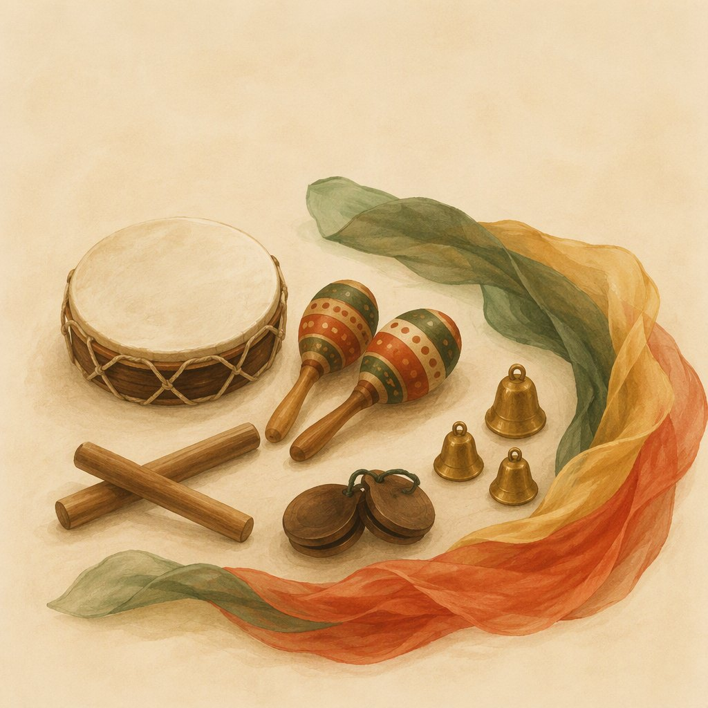

“
У неё просто волшебный, спокойный голос, который мгновенно успокаивает даже самых шумных малышей. Она умеет заинтересовать детей так, что они даже не замечают, как учатся.
Т
Татьянастудия «Я и мама» · 2ГИС
Помогаю малышам от года делать первые большие шаги — в речи, движении и самостоятельности. Рядом с мамой, в игре и в ритме.

Подготовленная среда, свободный выбор и сто пособий, которые ждут маленькие руки. Ребёнок учится сам — а мама учится быть рядом правильно. Внутри — интерактивная диагностика развития 12–24 месяцев.
Погрузиться в студию
Первые слова рождаются в ритме. Барабан и бубен, песенки-инсценировки и пальчиковые игры — музыка будит речь, а движение укрепляет её фундамент.
Погрузиться в студию«Помоги мне сделать это самому» — главная просьба каждого малыша. Я лишь создаю среду, в которой она исполняется.
По словам родителей, на занятия дети бегут сами — а домой уносят песенки, навыки и уверенность. Это лучшая оценка моей работы.
Каждый ребёнок говорит о себе через игру. Я смотрю, слушаю — и только потом предлагаю следующий шаг.
Малыш сам выбирает материал и темп. Рамки — спокойствие и уважение к другим. Так рождается самодисциплина.
После занятий родители получают советы и домашние игры именно под своего ребёнка — с учётом возраста и характера.
У неё просто волшебный, спокойный голос, который мгновенно успокаивает даже самых шумных малышей. Она умеет заинтересовать детей так, что они даже не замечают, как учатся.
Результаты видны практически сразу! Малышка напевает дома уже знакомые мелодии. Родителям понятны принципы работы, так как всё объясняют — для чего и как.
Педагог от бога — и для деток, и для мам. Она и нас многому учила, направляла в правильном и гармоничном развитии и взаимодействии со своими детьми. На любой вопрос был ответ.
Какое же это наслаждение — видеть, как после стабильных занятий ребёнок становится более самостоятельным, усидчивым и внимательным.
Помогает «разговорить» маленького молчуна. Человек, который «болеет» и живёт своим делом. Всего за пару месяцев — ощутимый прогресс.
Уже после второго занятия дочка начала активно подпевать! Мы выучили столько весёлых песенок, что они стали нашими постоянными спутниками в дороге и дома.
Отзывы родителей с карточки центра «Лукошко» на 2ГИС
Первое занятие — пробное: малыш поиграет, а вы увидите, как устроены студии. Мест в группах немного, запись ведётся заранее.